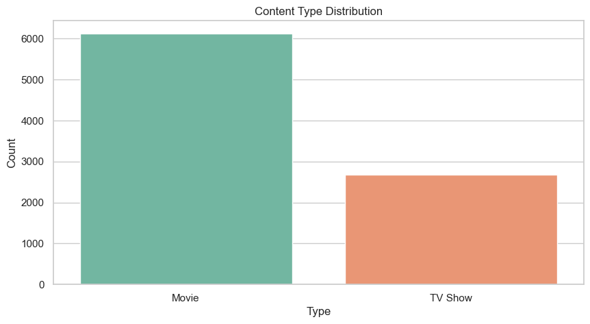
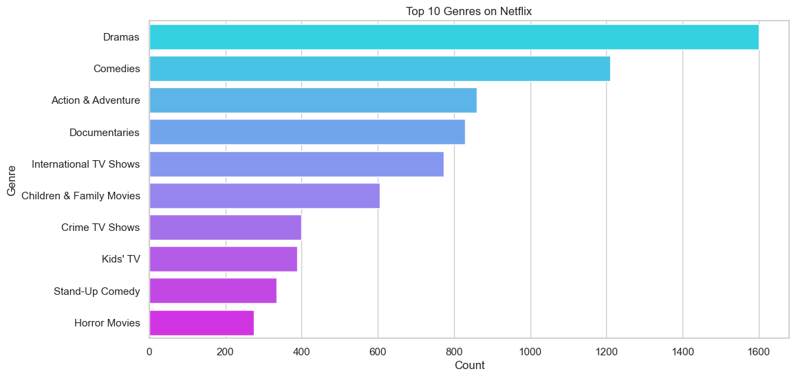
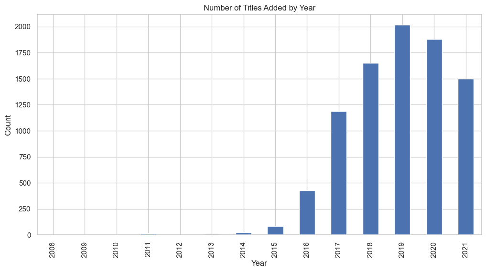
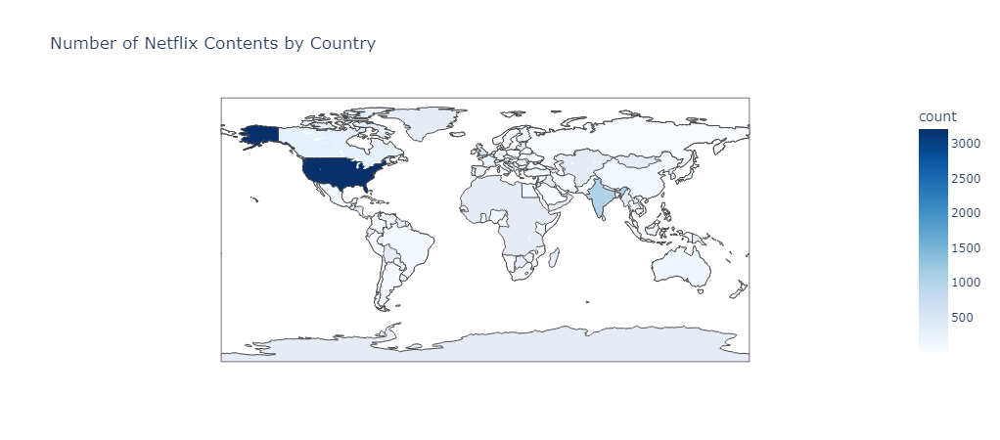
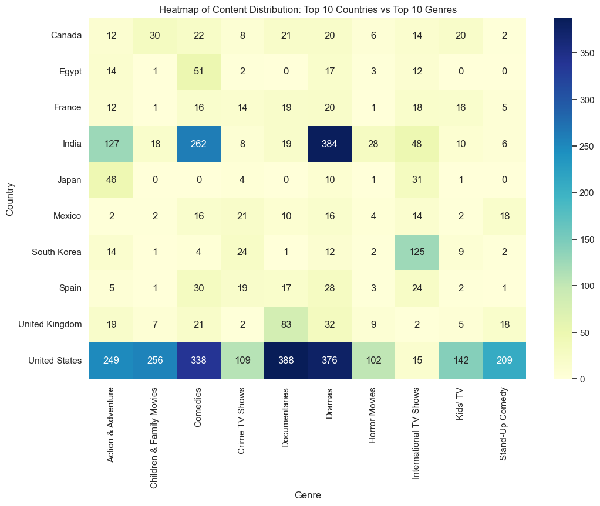
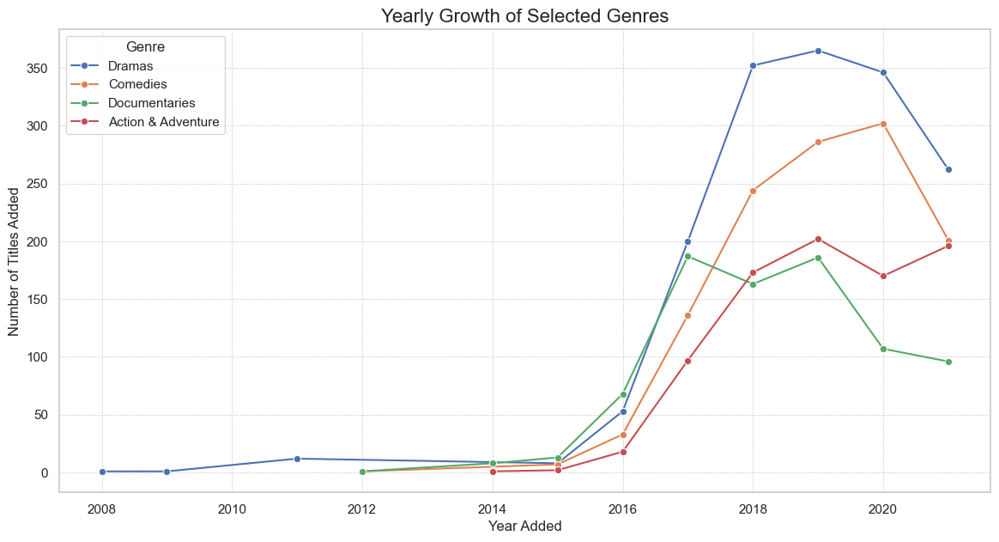
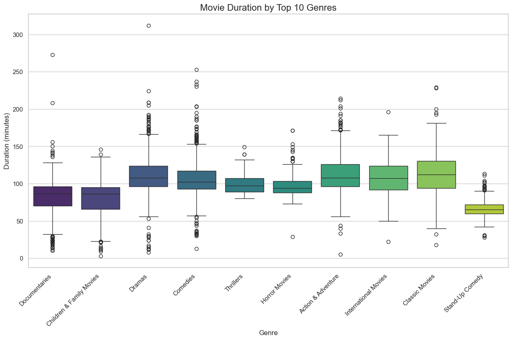

Executive Summary
This report provides a comprehensive analysis of Netflix's content library, focusing on content type distribution, genre popularity, release trends, and global distribution. The findings support data-driven strategies for content acquisition and market expansion.
About the Dataset
This analysis is based on the "Netflix Movies and TV Shows" dataset, publicly available on Kaggle. The dataset contains over 8,000 listings as of mid-2021 and includes key details for each title, such as cast, directors, ratings, release year, and duration. It provides a comprehensive snapshot of the content available on one of the world's most popular streaming platforms.
1. Content Type Distribution
Findings: The library consists of both Movies and TV Shows. TV Shows have seen a steady increase, indicating a growing user preference for serialized content.
Business Implication: Continue investing in high-quality TV series to maintain user engagement and subscription retention, while maintaining a strong movie catalog.
2. Top 10 Most Popular Genres
Findings: Dramas, International TV Shows, and Comedies are the most popular genres available on the platform.
Business Implication: Content acquisition should prioritize these popular genres. Investing in diverse niche genres can also attract a broader audience.
3. Content Added Over The Years
Findings: There has been a significant increase in the number of titles added each year, peaking in recent years, indicating rapid library expansion.
Business Implication: Maintain a consistent release schedule, with strategic peaks during high-traffic months (e.g., holidays), to keep the catalog fresh and engaging.
4. Global Content Distribution
Findings: The United States, India, and the United Kingdom are the top content-producing countries. The world map visualization highlights both strongholds and areas for potential growth.
Business Implication: Continue investing in local content in key markets and explore expansion opportunities in underrepresented regions with localized content.
5. Content Distribution: Top Countries vs. Genres
Findings: The heatmap reveals that specific genres are dominant in certain countries (e.g., Anime in Japan, Bollywood in India).
Business Implication: This data allows for a hyper-targeted content strategy, acquiring or producing genres that resonate with specific local audiences.
6. Genre Growth Trends Over Time
Findings: The line plot reveals that while all genres have grown, Dramas and Documentaries have shown significant upward trends since 2016. Documentaries, in particular, saw a notable spike around 2020, reflecting a growing user appetite for non-fiction content.
Business Implication: Netflix should capitalize on this trend by increasing investment in high-quality documentary series and films to meet rising audience demand.
7. Movie Duration Analysis by Genre
Findings: The box plot shows that genres like Stand-Up Comedy and Documentaries typically have a much shorter runtime compared to Dramas or International Movies.
Business Implication: This presents an opportunity to curate content based on viewing time. A "Quick Watch" or "Under 90 Minutes" category featuring these shorter genres could cater effectively to users with limited time.
Strategic Recommendations
Based on the analysis, we propose a multi-pronged strategy to reinforce Netflix's market leadership:
- Optimize the Content Portfolio:
- Capitalize on Growth Genres: Aggressively invest in high-growth categories like Documentaries and Dramas, which show strong upward trends in user interest.
- Curate by Viewing Time: Develop and promote playlists based on content duration, such as a "Quick Watch" category for shorter content like Stand-Up Comedy, to cater to diverse user schedules.
- Refine Global Strategy:
- Hyper-Targeted Regional Production: Move beyond simple localization. Use heatmap data to produce specific, high-demand genres in target countries to fill content gaps and resonate with local tastes.
- Enhance User Engagement:
- Smarter Personalization: Evolve the recommendation engine to incorporate not just genre, but also duration preferences and emerging trends, creating a more dynamic and satisfying user experience.
Conclusion
The path forward for Netflix is clear: transitioning from a strategy of mass content acquisition to one of surgical, data-driven curation. By deeply understanding the nuances of genre trends, regional tastes, and even viewing duration, Netflix can not only retain its existing subscribers but also unlock new growth in a fiercely competitive global market. The key to future dominance lies in using these insights to deliver the right content, to the right audience, at the right time.